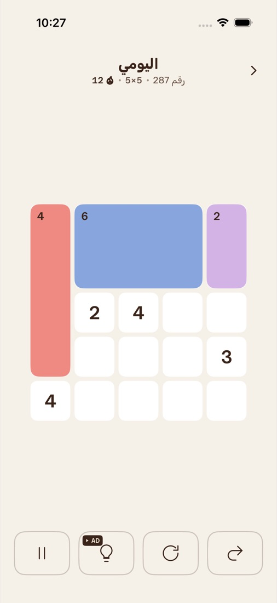
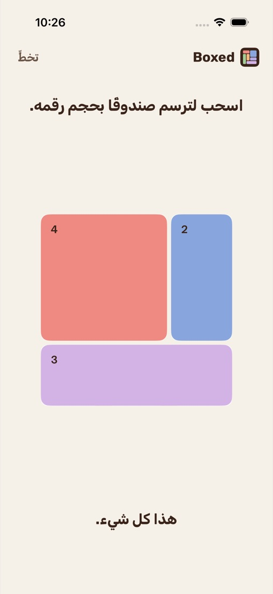
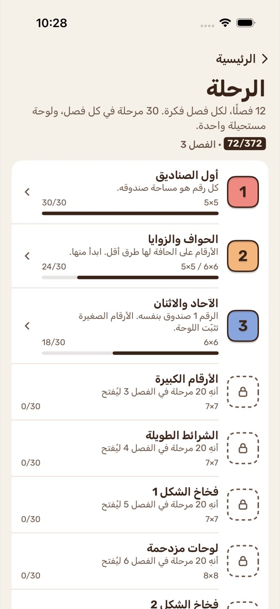

اليومي
ثلاث لوحات كل يوم، هي نفسها لكل اللاعبين. حافظ على سلسلتك.
قسّم الشبكة إلى صناديق. كل رقم يساوي حجم صندوقه.
لغز شيكاكو منطقي وهادئ للآيفون، بالعربية والإنجليزية. لكل لوحة حل واحد فقط.


طريقة اللعب
شيكاكو لغز منطقي ياباني يُعرف أيضًا بلغز المستطيلات. تقسّم فيه الشبكة إلى مستطيلات، بحيث يضم كل مستطيل رقمًا واحدًا فقط، ويكون هذا الرقم مساحته: فالرقم 6 قد يكون 2×3 أو 3×2 أو 1×6 أو 6×1. لا تتداخل الصناديق، وكل مربع في الشبكة ينتمي إلى صندوق واحد. نشرته دار Nikoli اليابانية أول مرة عام 1989، وعليه بُنيت لعبة Patches اليومية من LinkedIn التي صدرت في مارس 2026. لكل لغز شيكاكو جيد حل واحد فقط تصل إليه بالتفكير وحده، دون تخمين. وBoxed لعبة شيكاكو للآيفون: ثلاث لوحات جديدة كل يوم (5×5 و7×7 و10×10، هي نفسها للجميع)، ولوحات بلا نهاية حتى 12×12، ورحلة من 372 مرحلة، وسباق وقت مدته ثلاث دقائق، بالعربية والإنجليزية.
لتلعب شيكاكو في Boxed، اسحب على الشبكة لترسم صندوقًا حول رقم، والمس الصندوق لتزيله. تُحلّ اللوحة حين يدخل كل مربع في صندوق ويطابق كل صندوق رقمه.
اسحب على الشبكة لترسم مستطيلًا، والمس الصندوق لتزيله.
في كل صندوق رقم واحد فقط، وهذا الرقم هو مساحته. فالرقم 6 مثلًا قد يكون 2×3 أو 3×2 أو 1×6 أو 6×1.
لا تتداخل الصناديق، وكل مربع ينتمي إلى صندوق. حين تمتلئ الشبكة تكون قد انتهيت.
الأنماط
ابدأ بلوحات اليوم الثلاث، ثم واصل قدر ما تشاء.
ثلاث لوحات كل يوم، هي نفسها لكل اللاعبين. حافظ على سلسلتك.
اختر المقاس والصعوبة. كل لوحة جديدة ولها حل واحد.
12 فصلًا، لكل فصل فكرة، من الصناديق الأولى إلى فخاخ الأشكال العميقة.
ثلاث دقائق. حلّ أكبر عدد من اللوحات، واحدة تلو الأخرى.
كل فصل يقدّم فكرة واحدة: الحواف والزوايا، والآحاد والاثنينات، والأرقام الكبيرة، والشرائط الطويلة، وفخاخ الأشكال (حيث يبدو المربع هو الحل الواضح لكن الشريط وحده يناسب)، واللوحات المزدحمة، واللوحات العملاقة. أنهِ 20 من مراحل الفصل الـ30 ليُفتح الفصل التالي، وأنهِ الـ30 كلها لتُفتح لوحته المستحيلة.

السعر
كل الأنماط مجانية، والإعلانات هي ما يبقيها كذلك. ولا تظهر على اللوحة أثناء اللعب:
شراء واحد، لك للأبد. بلا اشتراك.
الدعم
شيكاكو لغز منطقي ياباني يُعرف أيضًا بلغز المستطيلات. تقسّم فيه الشبكة إلى مستطيلات يضم كلٌّ منها رقمًا واحدًا فقط، وهذا الرقم هو مساحته. لا تتداخل الصناديق، ويجب أن يُستخدم كل مربع. نشرته دار Nikoli اليابانية أول مرة عام 1989.
نعم. كل أنماط Boxed مجانية، وتدعمها إعلانات لا تظهر على اللوحة أثناء اللعب. ويزيل شراء «إزالة الإعلانات» لمرة واحدة اللافتات والإعلانات بين الألغاز، ويمنحك التلميحات بلا مشاهدة إعلان. لا يوجد اشتراك.
نعم. Boxed بالعربية والإنجليزية بالكامل، بواجهة من اليمين إلى اليسار بالعربية. يتبع لغة الآيفون، ويمكنك أن تختار العربية أو English بنفسك من الإعدادات ← اللغة. الشبكة نفسها لا تنعكس لأنها لغز مكاني، والأرقام بالأرقام الغربية.
نعم. تُصنع كل لوحة على جهازك، فتلعب كل الأنماط بلا إنترنت، والتلميحات أيضًا. الإعلانات وشراء «إزالة الإعلانات» فقط يحتاجان إلى اتصال.
Boxed للآيفون، ويحتاج iOS 17 أو أحدث. الآيباد غير مدعوم، ونسخة أندرويد قادمة لاحقًا.
افتح Boxed، والمس الترس في الرئيسية لتفتح الإعدادات، ثم المشتريات ← استعادة المشتريات. سجّل الدخول بحساب Apple نفسه الذي اشتريت به. الاستعادة مجانية.
في Boxed، اذهب إلى الإعدادات ← التذكير اليومي وأوقفه. ويمكنك تغيير وقته من هناك أيضًا.
ويمكنك كذلك إيقاف كل إشعارات Boxed من الإعدادات ← الإشعارات ← Boxed في الآيفون. التذكير مجدول على جهازك، ولا يُرسل شيء من أي خادم.
لا يوجد حساب ولا تسجيل دخول. تقدّمك وسلسلتك وإعداداتك محفوظة على الآيفون فقط، ولا مزامنة بين الأجهزة.
نعم. يحصل الجميع على لوحات اليومي والصعب والخبير نفسها كل يوم، ولكل لوحة حل واحد فقط.
التتبع متوقف ما لم تسمح به حين يسألك التطبيق. لتغييره لاحقًا اذهب إلى الإعدادات ← الخصوصية والأمن ← التتبع في الآيفون.
وفي المنطقة الاقتصادية الأوروبية والمملكة المتحدة يعرض Boxed أيضًا الإعدادات ← المساعدة ← خيارات خصوصية الإعلانات لمراجعة موافقتك. التفاصيل في سياسة الخصوصية.